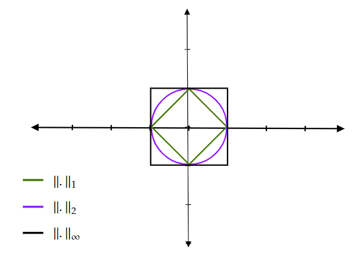

Topologie des espaces métriques¶
Les espaces vectoriels seront des \(K\)-espaces vectoriels ou le corps \(K\) est egal a \(\mathbb R\) ou \(\mathbb C\).
Espaces vectoriels normés - Espaces métriques¶
Distances et espaces métriques¶
Soit \(X\) un ensemble et \( d : X \times X \to \mathbb R^+\) une application
Définition
On dit que \(d\) est une distance sur \(X\) . si :
i) \(d(x,y) = 0\) si, et seulement si, \(x=y\) (séparation));
ii) \(\forall x, y \in X, d(x,y) = d(y,x)\) (symétrie);
iii) \(\forall x,y, z \in X, d(x,y) \leq d(x,y) + d(y,z)\) (inégalité triangulaire)
L’ensemble \(E\) muni de cette distance est appelé espace métrique.
Si \(Y \subset X\) est un sous-ensemble de \(X\), alors la restriction de \(d\) a \(Y\) est une distance. Donc \(Y\) muni de cette restriction est bel et bien un espace mtrique.On parlera alors de metrique induite sur \(Y\).
Exemple
1- Soit \(X\) un ensemble non vide. On peut definir la distance suivante:
2 - Sur \(\mathbb R\), on dispose de la distance usuelle suivante: $\( d(x,y)=0 \)$
Définition
Soit \((X,d)\) un espace métrique. Pour tout \(x\in X\) et pour tout \(r>0\), on note:
la boule ouverte de centre \(x\in X\) et de rayon \(r>0\). et
la boule fermée de centre \(x\in X\) et de rayon \(r>0\).
Norme et espace vectorial norme¶
Définition
Soit \(E\) un \(K\)-espace vectorial. Une application \(\mathcal N : E \to \mathbb R^+\) est dit une norme sur \(E\) si les proprietes suivantes sont verifiees: (i)- \(\mathcal N(x) = 0\) si et seukement si \(x=0\) (separation); (ii)- \(\forall x \in E\) et \(\forall \lambda \in \mathcal K, \mathcal N(\lambda x) = |\lambda| \mathcal N(x)\) (homogeneite); (iii)- \(\forall x, y \in E, N(x+y) \leq \mathcal N(x) + \mathcal N(y)\) (inegalite triangulaire).
On dit alors que \((E, \mathcal N)\) est un espace vectoriel norme.
Soit \((E, \mathcal N)\) un espace vectoriel norme, Si \(X=E\), on peut definir la distance suivante:
On dit que \(d\) est la distance associee a la norme \(\mathcal N\).
Exemples
1- Sur \(\mathbb K^N\), on peut definir les normes suivantes:
Pour demontrer que \(\|.\|_2\) verifie l’inegalite triangulaire, on utilise l’inegalite de Cauchy-Shwarz:
Dans un meme espace, la courbe des boules (ouvertes ou fermees) change, de maniere considerable, en fonction de la distance choisie. Par exemple, dans \(\mathbb R^2\), les distances associees aux normes suivantes:
Voici les courbes des boules ouvertes associees a chaque distance (norme)
{kind=link}
Définition
Soit \(E\) un espace vectoriel. On dit que deux normes \(\mathcal N_1\) et \(\mathcal N_2\) définies sur \(E\) sont équivalentes s’il existe deux constantes \(C_1, C_2 >0\) telles que :
Topologie des espaces metriques¶
Définition
Soit \((X, d)\) un espace metrique. On dit qu’un sous-ensemble \(U\) de \(X\) est un ouvert de \((X, d)\) si, pour tout \(x\) de \(U\), il existe \(r\leq 0\) tel que \(B(x,r)\), la boule ouverte centree en \(x\) et de rayon \(r>0\), est incluse dans \(U\). On apelle topologie associee a la metrique \(d\) et l’on note \(\mathcal T_d\).
Exemple
On verifie que les ensembles \(\emptyset\) et \(X\) sont toujours des ouverts de \((X, d)\).
Soit \(x \in C\) et \(r>0\). Alors \(B(x,r)\), la boule ouverte de centre \(x\) et de rayon \(r\) est un ouvert de \((X, d)\).
Les ouverts d’un espace metrique verifieent les deux proprietes suivantes:
Proposition
Une intersection finie d’ouverts est un ouvert.
Une reunion quelconque d’ouverts est ouvert.
Proposition
Soit \((X, d)\) un espace metrique. Un ensemble \(V\) est dit voisinage d’un point \(x \in X\) (ou un ensemble \(Y\subsetX\)) s’il contient un ouvert qui lui meme contient le point \(x\) (ou l’ensemble \(Y\)).
On remarque qu’un ouvert est un voisinage de chacum de ses points.
Proposition
Soit \((X, d)\) un espace metrique. Un ensemble \(F \subset X\) est dit ferme si son complementaire \(X\setminus F\) est un ouvert.
Exemples
On peut verifier facilement, par passage au complementaire, que \(\emptyset, X\) sont des fermes de \((X, d)\).
Soit \(x\in X\) et \(r>0\). Alors, la boule fermee de centre \(x\) et de rayon \(r\), \(B_f(x,r)\) est un ferme de \((X, d)\).
Les fermes d’un espace metrique verifient les deux proprietes suivantes:
Proposition
Une reunion finie de fermes est un ferme.
Une intersection quelconque de fermes est un ferme.
Exemple
On considere \(X=\mathbb R\) muni de la distance usuelle \(d(x,y)=|y-x|\), Soient \(a\) et \(b\) deux reels tels que \(a<b\). Alors:
Les ensembles \(]a, b[\), \(]b, +\infty[\) et \(]-\infty, b[\) sont des ouverts de \((\mathbb R, d)\);
Les ensembles \([a, b]\), \([b, +\infty[\), \(]-\infty, b]\) et \({a}\) sont des fermes de \((\mathbb R, d)\);
Les ensembles \([a, b[\) et \(]a, b]\) ne sont ni des ouverts ni des fermes de \((\mathbb R, d)\).
Topologie induite
Soit \((X, d)\) un espace metrique et \(A \subset X\) un sous-ensemble de \(X\). Alors:
un ensemble \(G \subset A\) est un ouvert de \((A, d)\) si et seulement si \(G=A\cap U\) avec \(U\) est un ouvert de \((X, d)\).
un ensemble \(F \subset A\) est un ferme de \((A, d)\) si et seulement si \(F=A\cap V\) avec \(V\) est un ouvert de \((X, d)\).